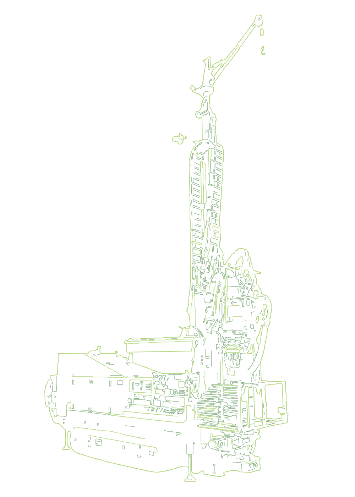

DIE TECHNIK HINTER DER BOHRUNG
Gebaut für
den Weg nach unten.
Mast, Bohrantrieb, Fahrwerk und Schlauchführung arbeiten am Bohrplatz zusammen. Das Rotomax-Gerät aus unserer Bildvorlage macht diesen Aufbau sichtbar.
In 3D erkundenROTOMAX / BILDVORLAGE
DAS GERÄT IM DETAIL
Jedes Bauteil.
Eine Aufgabe.
- Bohrmast
- Führung für Bohrantrieb und Bohrgestänge.
- Bohrantrieb
- Die zentrale Baugruppe für die Drehbewegung am Gestänge.
- Raupenfahrwerk
- Die Basis für das Verfahren des Geräts auf der Baustelle.
- Schläuche & Führungen
- Verbindung der beweglichen Baugruppen mit den Versorgungssystemen.
- Geräteabmessungen / Leistung
- [Technische Daten ergänzen]
- Weitere Geräte
- [Bestätigten Maschinenpark ergänzen]
Die Abbildung zeigt die gelieferte Rotomax-Vorlage. Anzahl, Eigentumsverhältnisse und Einsatzdaten des Maschinenparks sind im Entwurf noch nicht hinterlegt.
VOM FOTO ZUR LINIENGRAFIK
Ein Gerät.
Zwei Sichtweisen.
Die grünen Vektorkonturen stammen direkt aus dem Originalfoto. Das drehbare 3D-Modell auf der Startseite interpretiert seine räumliche Form.
